Chapter 4 세 군 이상의 크기 비교
- 자료의 유형에 따른 분석 방향
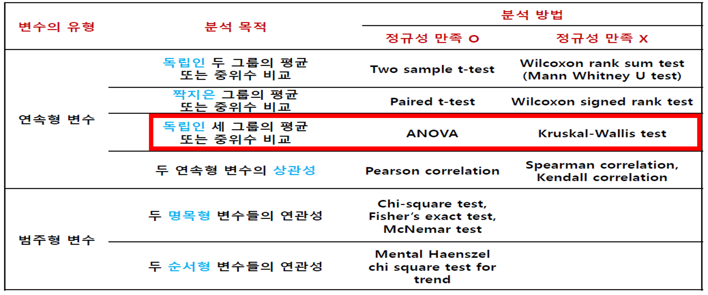
- 독립된 세 군 이상의 크기를 비교하는 방법
- 다중비교의 문제
- 여러 개의 검정을 동시에 수행하게 되면 제1종 오류 증가 -> 귀무가설이 사실임에도 대립가설 채택 가능성 증가
- 세 군 사이에 크기의 차이가 있는지 전반적인 검정을 먼저 시행하고, 차이가 있다고 증명되었을 때 다중비교
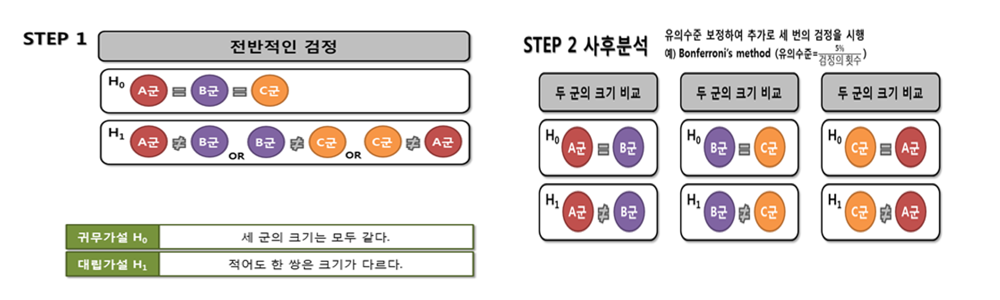
- 세 군의 크기를 동시에 검정하는 대신 t-test를 여러 번 하는 것은 어려울까??
\[ P(Reject \,\,\, H_{01}|H_{01} \,\,\, true)=\alpha,\quad P(Not \,\,\, reject \,\,\, H_{01}|H_{01} \,\,\, ture)=1-\alpha \] \[ P(Reject \,\,\, H_{02}|H_{02} \,\,\, true)=\alpha,\quad P(Not \,\,\, reject \,\,\, H_{02}|H_{02} \,\,\, ture)=1-\alpha \]
\[ P(Reject \,\,\, H_{03}|H_{03} \,\,\, true)=\alpha,\quad P(Not \,\,\, reject \,\,\, H_{03}|H_{03} \,\,\, ture)=1-\alpha \]
\[ P( Not \,\,\, reject\,\,\, H_0 | H_0 \,\,\, true)=P(Not \,\,\, all\,\,\, reject H_{01}, \,\, H_{02}, \,\, H_{03}|H_0 \,\,\, true) \]
\[ =(1-\alpha)\times (1-\alpha) \times (1-\alpha)=(1-\alpha)^3 \]
\[ P(Reject \,\,\, H_0 | H_0 \,\,\, true)=1-P(Not \,\,\, reject\,\,\, H_0 | H_0 \,\,\, true)=1-(1-\alpha)^3 \]
- 3번의 검정에서 overall \(\alpha\)는 \(1-(1-\alpha)^3\)이 되어 제1종 오류 증가
- 5% 유의수준에서 3번의 t-검정을 시행하면, overall \(\alpha\)는 0.1426
4.1 일원배치 분산분석 (ANOVA)
*연속형 변수로 측정된 세 군 이상의 크기를 동시에 비교하기 위한 통계 분석방법
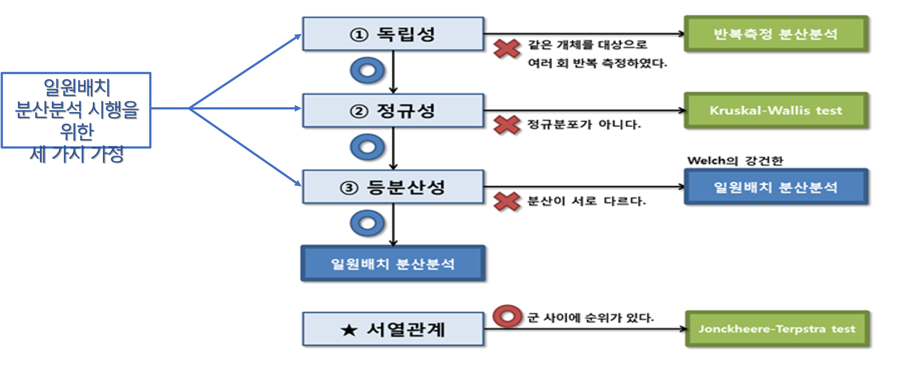
- 독립성 가정
- 연속형 변수로 측정된 세 군 이상의 동시 크기 비교에서 독립성 가정을 만족하는 경우에만 일원배치 분산분석 사용 가능
- 만약 같은 개체를 대상으로 여러 시점에서 반복적으로 결과변수를 측정했다면, 반복측정 분산분석 (Repeated measures ANOVA)
- 등분산성 가정
- 연속형 변수로 측정된 세 군 이상의 동시 크기 비교에서 등분산성 가정을 만족하는 경우에만 일원배치 분산분석 사용을 원칙으로 함.
- 분산분석의 경우 비교하는 집단들의 표본수가 서로 같거나 거의 비슷한 경우, 등분산성 가정이 위배되는 것에 큰 영향을 받지 않음.
- 집단 간의 표본 수 차이가 크고, 등분산성 가정을 심하게 위배하는 경우 Welch‘s robust ANOVA
- 정규성 가정
- 연속형 변수로 측정된 세 군 이상의 동시 크기 비교에서 정규성 가정을 만족하는 경우에만 모수적 방법인 ANOVA 사용 가능
- 만약 정규성 가족을 만족하지 못한다면, 비모수적 방법인 Kruskal-Wallis test를 적용하여 분석 필요
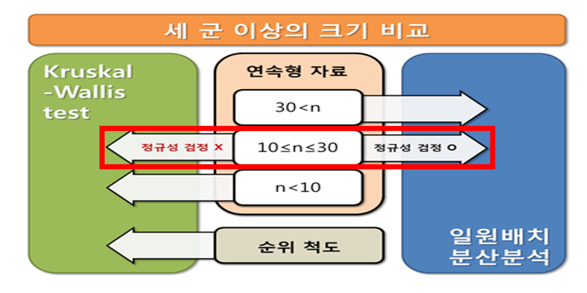
일원배치 분산분석
- [분산분석 가설]
- 귀무가설: 집단간 차이가 없다.
- 대립가설: 최소한 하나의 집단은 차이가 있다.
- 연속형 변수로 측정된 세 군 이상의 크기를 동시에 비교하기 위한 통계 분석방법
- 변동과 요인의 개념으로 요인의 영향을 분석 (일원배치 분산분석에서 요인은 ‘군’)
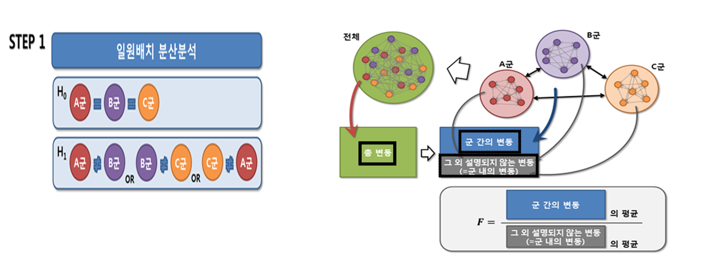
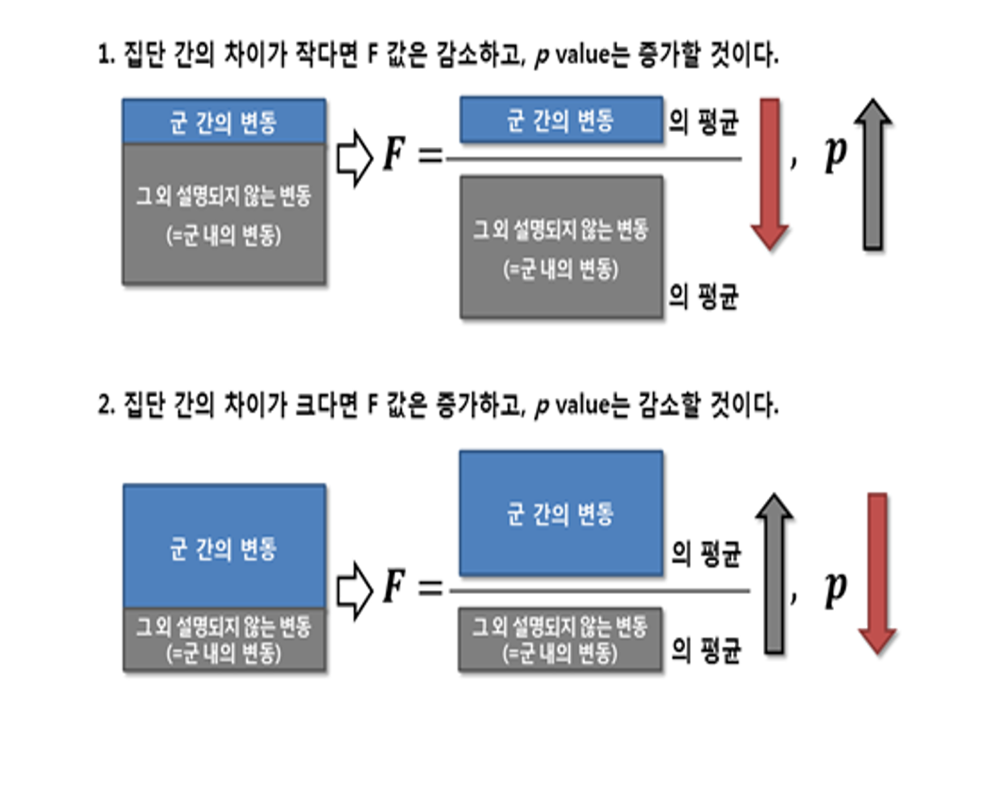
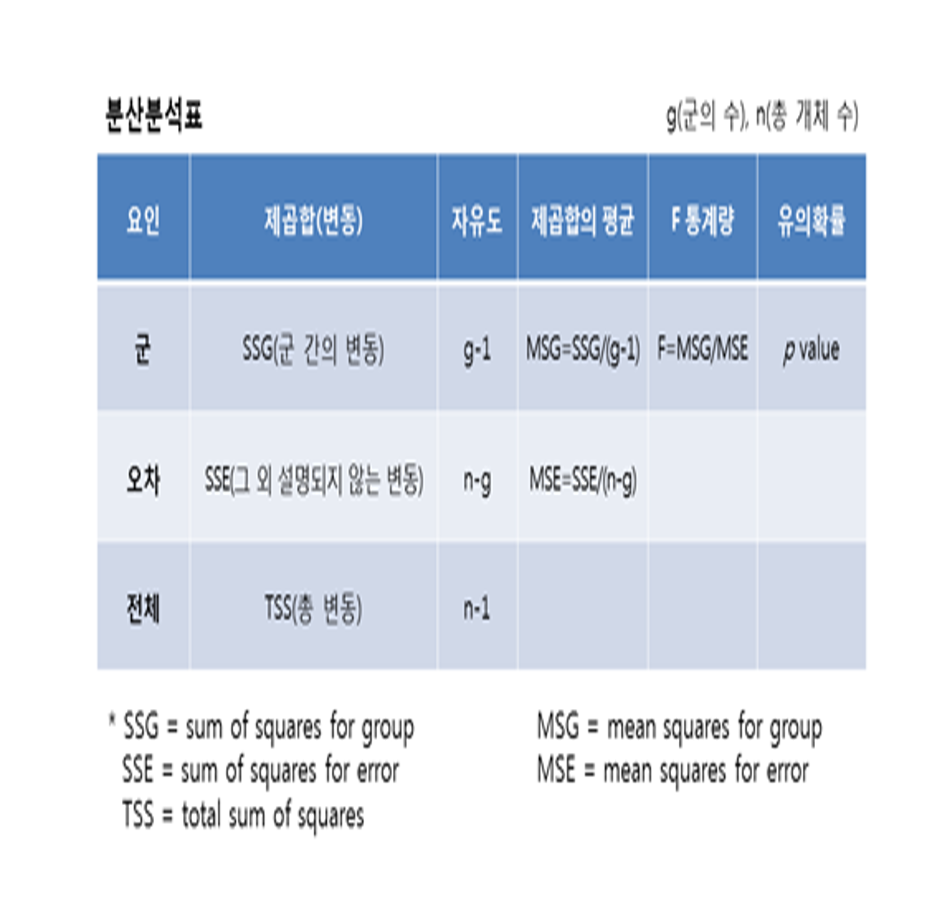
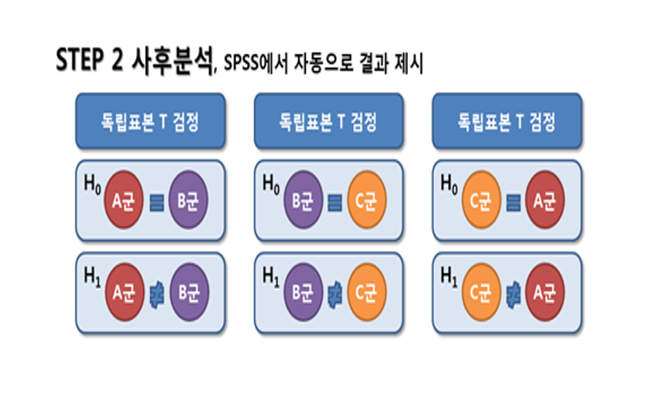
- Bonferroni’s method (보수적, 간단, 의학에서 많이 활용)
- 유의수준: 유의수준 \(\alpha\) / \(_nC_2\) (n: 군의 개수, 일반적으로 4군 이상이면 유의 수준이 너무 낮아져 활용 어려움)
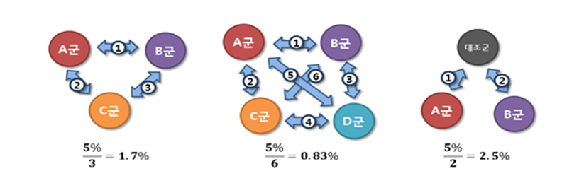
Dunnet T3 (등분산을 가정하지 못하는 경우에 활용)
Tukey (각 집단의 표본 수가 같을 때 검정력 증가)
Scheffe, Duncan 등 활용 가능
4.2 Kruskal-Wallis test
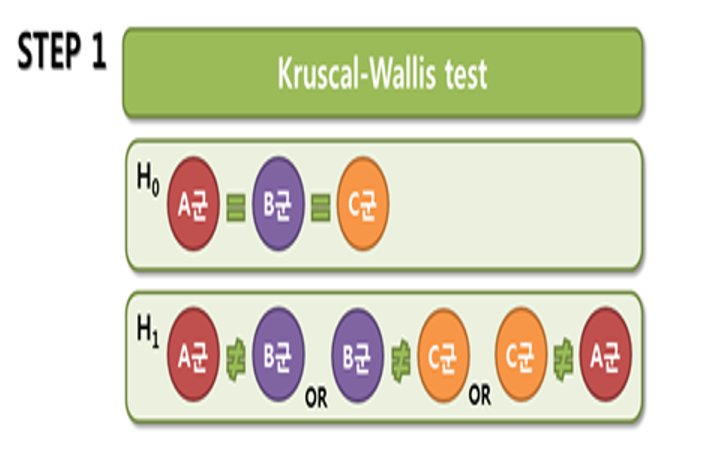
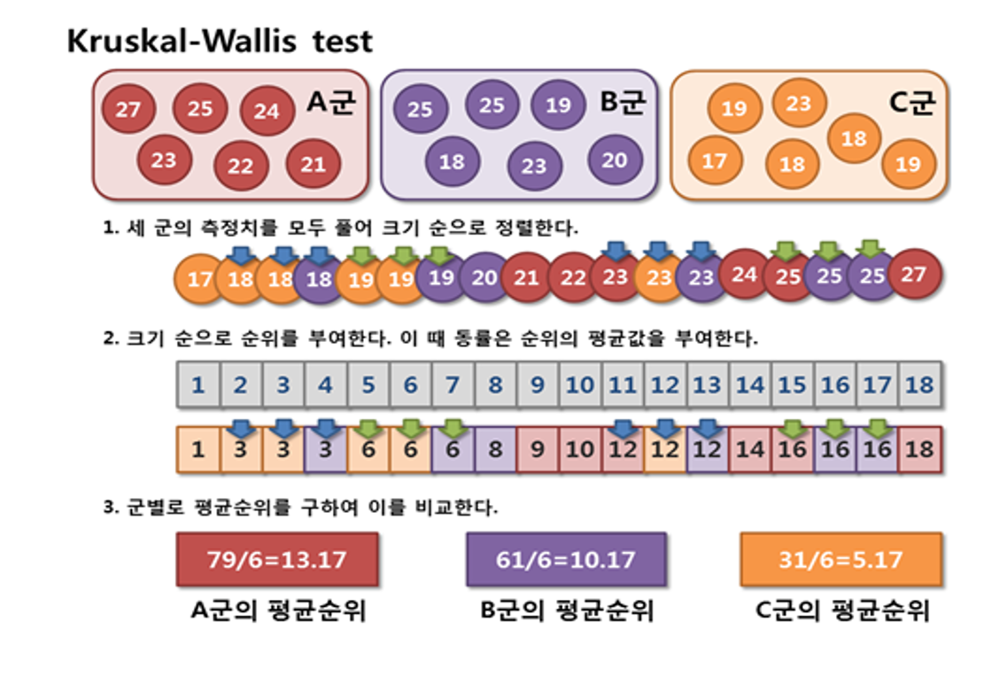
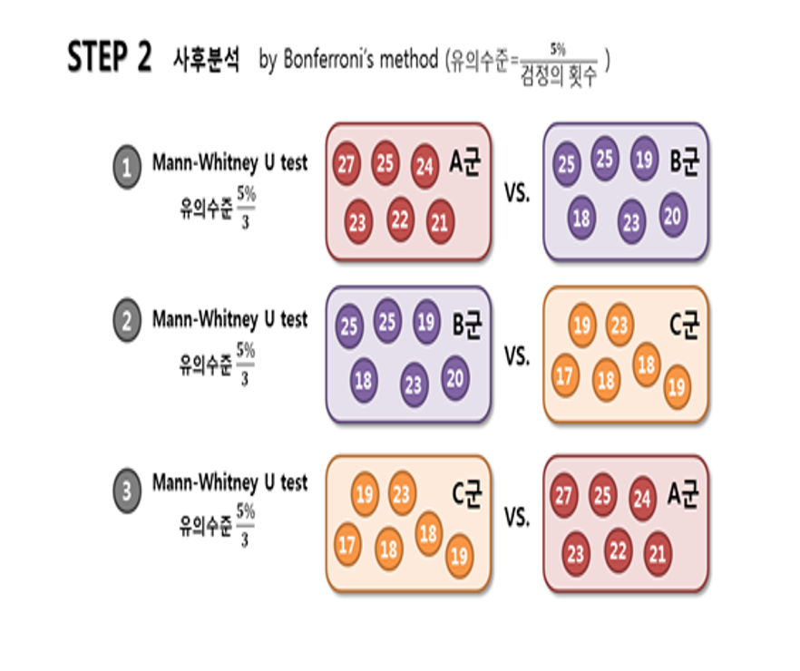
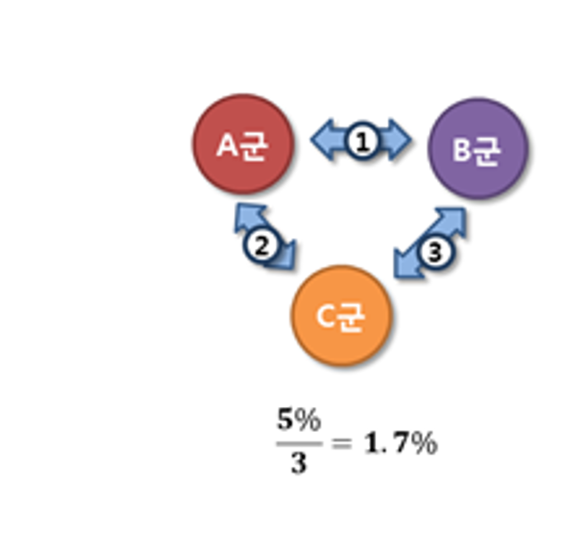
군 간 서열 관계가 있는 경우
- 서열 관계가 있는 군 사이의 경향성을 검정하는 경우에는 Jonckheere-Terpstra test 사용
- 독립변수 간의 양적 변화에 따라 종속변수가 증가 혹은 감소하는 경향이 있는지 검정 가능
- 예시) 항우울제를 각각 20mg, 40mg, 60mg 투여한 세 군 사이에 투여 용량 증가에 따른 우울증 점수의 경향성을 검정하는 경우
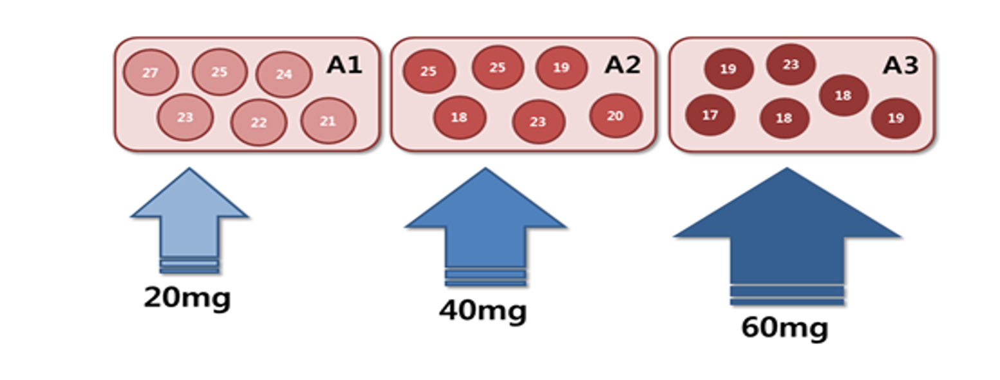
- KW test와 마찬가지로 비모수적인 방법이므로 정규성 검정을 필요로 하지 않음. *일종의 경향 분석으로 독립변수의 변화에 대한 종속변수의 증가 또는 감소의 경향 만을 결정
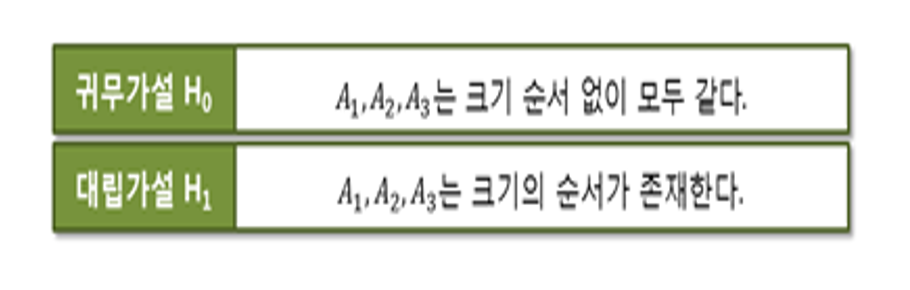
4.3 R 예제
4.3.1 ANOVA
4.3.1.1 데이터 불러오기
depressiondata=read.csv("data/4_anova.csv",header=T)
#View(depressiondata)attach(depressiondata)4.3.1.2 탐색적 자료분석
summary(depressiondata)## group score
## Min. :1 Min. :14.00
## 1st Qu.:1 1st Qu.:19.00
## Median :2 Median :21.00
## Mean :2 Mean :20.97
## 3rd Qu.:3 3rd Qu.:23.00
## Max. :3 Max. :28.00by(score,group,summary)## group: 1
## Min. 1st Qu. Median Mean 3rd Qu. Max.
## 19.00 21.75 22.50 23.08 25.00 28.00
## ------------------------------------------------------------
## group: 2
## Min. 1st Qu. Median Mean 3rd Qu. Max.
## 14.00 17.00 18.50 18.58 19.25 24.00
## ------------------------------------------------------------
## group: 3
## Min. 1st Qu. Median Mean 3rd Qu. Max.
## 18.00 19.00 21.50 21.25 22.25 27.004.3.1.3 정규성 검정
#par 함수: 그래픽장치의 설정을 정의하는데 이용할 수 있는 함수
#mfrow: 그래픽 윈도우를 분할하는 기준을 정의하는 인수 c(nr,nc)로 정의되면 총 nr*nc
par(mfrow=c(2,3))
#히스토그램: 히스토그램의 모습을 통해 자료의 정규성 확인
hist(score[group==1],main="Group A")
hist(score[group==2],main="Group B")
hist(score[group==3],main="Group C")
boxplot(score~group, col="yellow1")
#QQ plot(quantile-quantile plot) 그리기
#QQ plot: 특정 분포에서의 분위수 기대값과 실제 분위수 관측값을 x축과 y축에 표시. 직선에 일치할수록 자료는 정규분포에 가까움.
#qqnorm: 주어진 데이터와 정규 확률 분포를 비교하는 QQ plot을 그림 --> 정규성을 확인할 때 많이 사용
#qqline: normal quantile-quantile line을 추가한다. 정규분포인경우 qqnorm()의 결과가 qqline()의 직선 위에 위치하게 된다
qqnorm(score[group==1], col="blue", main="Normal QQ Plot of Group A")
qqline(score[group==1], col="red")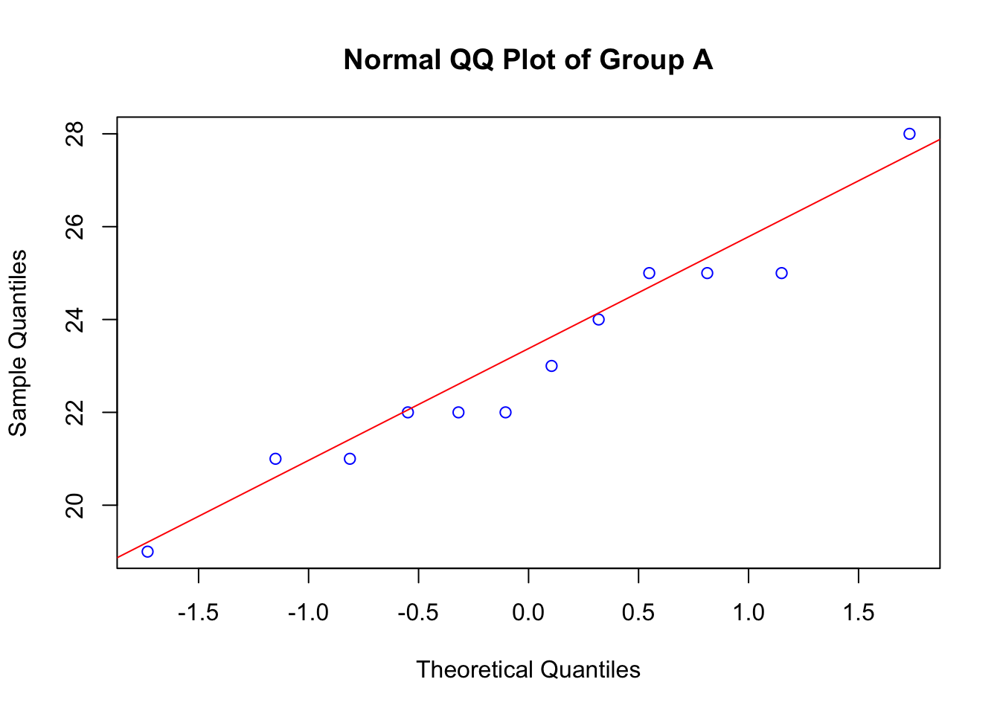
qqnorm(score[group==2], col="blue", main="Normal QQ Plot of Group B")
qqline(score[group==2], col="red")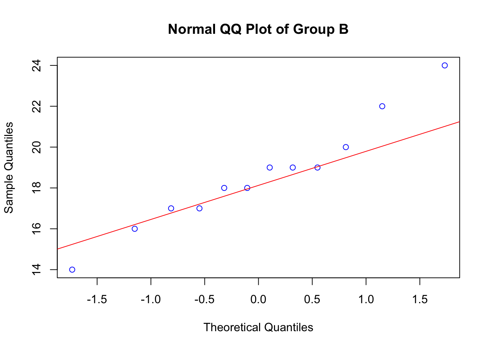
qqnorm(score[group==3], col="blue", main="Normal QQ Plot of Group C")
qqline(score[group==3], col="red")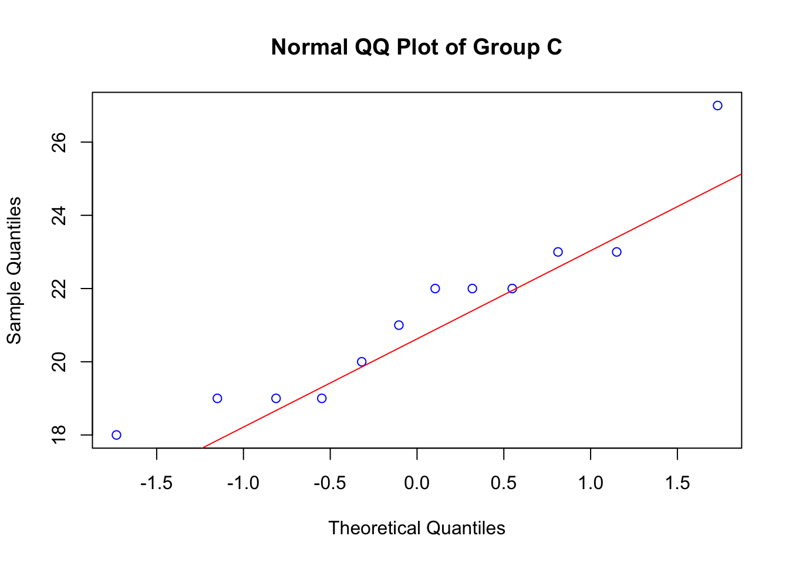
### 통계적 방법을 통한 정규성 검정
by(score, group, shapiro.test)## group: 1
##
## Shapiro-Wilk normality test
##
## data: dd[x, ]
## W = 0.95826, p-value = 0.7588
##
## ------------------------------------------------------------
## group: 2
##
## Shapiro-Wilk normality test
##
## data: dd[x, ]
## W = 0.96468, p-value = 0.8479
##
## ------------------------------------------------------------
## group: 3
##
## Shapiro-Wilk normality test
##
## data: dd[x, ]
## W = 0.91146, p-value = 0.22274.3.1.4 등분산성 검정
# install.packages("lawstat")
library(lawstat)
levene.test(score,group)##
## Modified robust Brown-Forsythe Levene-type test based on the absolute
## deviations from the median
##
## data: score
## Test Statistic = 1.0203e-32, p-value = 14.3.1.5 ANOVA
aov1=aov(score~factor(group))
summary(aov1)## Df Sum Sq Mean Sq F value Pr(>F)
## factor(group) 2 122.9 61.44 9.652 0.000501 ***
## Residuals 33 210.1 6.37
## ---
## Signif. codes: 0 '***' 0.001 '**' 0.01 '*' 0.05 '.' 0.1 ' ' 14.3.1.6 사후분석(다중검정)
# Tukey
# 그룹 1,2 그리고 2,3 차이에 유의한 차이가 있음. / 그러나 1,3 간에는 유의한 차이가 없음.
TukeyHSD(aov(score~factor(group)))## Tukey multiple comparisons of means
## 95% family-wise confidence level
##
## Fit: aov(formula = score ~ factor(group))
##
## $`factor(group)`
## diff lwr upr p adj
## 2-1 -4.500000 -7.0275596 -1.9724404 0.0003362
## 3-1 -1.833333 -4.3608929 0.6942262 0.1919790
## 3-2 2.666667 0.1391071 5.1942262 0.0368825# Bonferroni
# 그룹 1,2 그리고 2,3 차이에 유의한 차이가 있음. / 그러나 1,3 간에는 유의한 차이가 없음.
pairwise.t.test(score, group, p.adj="bonferroni")##
## Pairwise comparisons using t tests with pooled SD
##
## data: score and group
##
## 1 2
## 2 0.00035 -
## 3 0.25295 0.04264
##
## P value adjustment method: bonferronidetach(depressiondata)4.3.2 Kruskal-Wallis test
# install.packages("pgirmess")
library(pgirmess)4.3.2.1 자료입력
depressiondata=read.csv("data/4_kruskal_wallis_test.csv", header=T)
attach(depressiondata)
#View(depressiondata)4.3.2.2 kruskal-wallis test
# 검정 결과 p-value가 0.03031로 세 군의 크기가 같다는 귀무가설 기각, 적어도 하나는 차이 존재.
kruskal.test(score~group)##
## Kruskal-Wallis rank sum test
##
## data: score by group
## Kruskal-Wallis chi-squared = 6.9927, df = 2, p-value = 0.030314.3.2.3 사후검정
kruskalmc(score,group)## Multiple comparison test after Kruskal-Wallis
## p.value: 0.05
## Comparisons
## obs.dif critical.dif difference
## 1-2 3 7.378741 FALSE
## 1-3 8 7.378741 TRUE
## 2-3 5 7.378741 FALSE# bonferroni correction 활용 사후검정 (dunn.test 다중검정 목적 비모수 검정방법)
# unadjusted p-value는 유의수준이 0.05/3=0.017, adjusted p-value는 유의수준 0.05
# install.packages("FSA")
library(FSA)## ## FSA v0.9.3. See citation('FSA') if used in publication.
## ## Run fishR() for related website and fishR('IFAR') for related book.dunnTest(score~factor(group), method="bonferroni")## Dunn (1964) Kruskal-Wallis multiple comparison## p-values adjusted with the Bonferroni method.## Comparison Z P.unadj P.adj
## 1 1 - 2 0.9814652 0.326363404 0.97909021
## 2 1 - 3 2.6172404 0.008864388 0.02659316
## 3 2 - 3 1.6357753 0.101886628 0.30565988detach(depressiondata)4.3.3 Jonckheere-Terpstra test
# install.packages("clinfun")
library(clinfun)4.3.3.1 자료입력
depressiondata=read.csv("data/4_JT_test.csv",header=T)
attach(depressiondata)
#View(depressiondata)4.3.3.2 Jonckheere-Terpstra test
# 귀무가설: 각 군 1,2,3은 크기 순서없이 모두 같다.
# 대립가설: 각 군은 크기의 순서가 존재한다. p=0.009로 귀무가설 기각 --> 크기의 순서 존재
jonckheere.test(score, group)## Warning in jonckheere.test(score, group): Sample size > 100 or data with ties
## p-value based on normal approximation. Specify nperm for permutation p-value##
## Jonckheere-Terpstra test
##
## data:
## JT = 21.5, p-value = 0.008602
## alternative hypothesis: two.sidedby(score, group, summary)## group: 1
## Min. 1st Qu. Median Mean 3rd Qu. Max.
## 21.00 22.25 23.50 23.67 24.75 27.00
## ------------------------------------------------------------
## group: 2
## Min. 1st Qu. Median Mean 3rd Qu. Max.
## 18.00 19.25 21.50 21.67 24.50 25.00
## ------------------------------------------------------------
## group: 3
## Min. 1st Qu. Median Mean 3rd Qu. Max.
## 17.0 18.0 18.5 19.0 19.0 23.0detach(depressiondata)